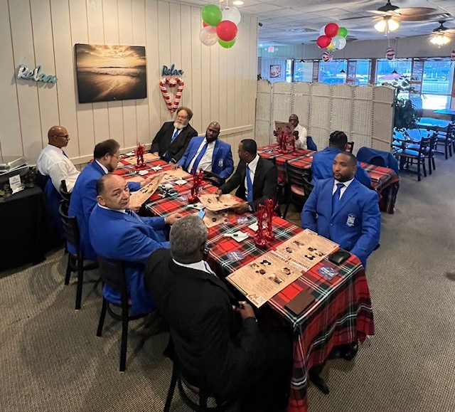

Bigger and Better
Business
Economic empowerment, financial literacy, entrepreneurship, and support for
 ΦΒΣ | ΤΥΣ
ΦΒΣ | ΤΥΣTau Upsilon Sigma Chapter

Phi Beta Sigma Fraternity, Inc., through the Tau Upsilon Sigma Chapter, proudly serves the geographical area of Clay County, Florida and surrounding areas. Guided by the Fraternity's principles of Brotherhood, Scholarship, and Service, we are committed to meaningful community engagement, educational initiatives, social action, and service to others.
Guided by Phi Beta Sigma's enduring motto, “Culture for Service and Service for Humanity,” Tau Upsilon Sigma works locally to strengthen our communities, develop leaders, and create lasting positive impact.
ABOUT OUR CHAPTER
Economic empowerment, financial literacy, entrepreneurship, and support for

Scholarship, mentoring, academic achievement, and educational opportunities for youth and our community.

Civic engagement, community advocacy, health initiatives, voter education, and service addressing critical community needs.
Join Phi Beta Sigma Fraternity, Inc. and the Tau Upsilon Sigma Chapter as we serve the geographical area of Clay County, Florida and surrounding areas.
Join Tau Upsilon Sigma at one of Clay County's signature community events.
Tau Upsilon Sigma joins the community in supporting breast cancer awareness and the fight against breast cancer.
Tau Upsilon Sigma honors our nation's veterans through participation in Wreaths Across America.
Brotherhood in action. See how the Tau Upsilon Sigma Chapter is advancing the mission of Phi Beta Sigma through service, fellowship, and community engagement throughout the geographical area of Clay County, Florida and surrounding areas.


Interested in learning more about Phi Beta Sigma Fraternity, Inc., connecting with the Tau Upsilon Sigma Chapter, attending an upcoming event, or partnering with us in service? We'd love to hear from you.